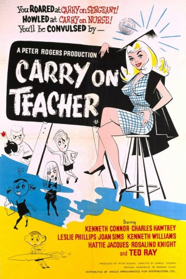

#11776 Carry On 03 - Ist ja irre - Lauter liebenswerte Lehrer *OmU*
Alternativ: Carry On Teacher (Englischer Titel)
 
 IMDB-Wertung: 6.3 / 10
IMDB-Wertung: 6.3 / 10  Metascore: 0
Metascore: 0 
William Wakefield, der Direktor der englischen Privatschule Maudlin Street freut sich schon auf seine neue Stelle an der modernen Schule in Sussex. Er muss nur noch die Schulinspektorin Felicity Wheeler und den Kinderpsychologen Alistair Grigg, die eigens zur Überprüfung seiner Fähigkeiten anreisen, überzeugen. Als die Schüler jedoch spitz kriegen, dass ihr geliebter Direktor sie verlassen will, laufen die kleinen Racker zur Höchstform auf und sabotieren den Unterricht, wo es nur möglich ist ...
Jahr: 1959
Dauer: 86 Minuten
FSK:
Land: England Studio: Carol Media HomeTonspuren:
Untertitel:
Auflösung: SD (852x480) Größe: 548 MB
Genre: Komödie
Regisseur: Gerald Thomas
Drehbuch: Norman Hudis
Soundtrack: Bruce Montgomery
Darsteller:
 Kenneth Connor als Gregory Adams
Kenneth Connor als Gregory Adams Charles Hawtrey als Michael Bean
Charles Hawtrey als Michael Bean Leslie Phillips als Alistair Grigg
Leslie Phillips als Alistair Grigg Joan Sims als Sarah Allcock
Joan Sims als Sarah Allcock Kenneth Williams als Edwin Milton
Kenneth Williams als Edwin Milton Hattie Jacques als Grace Short
Hattie Jacques als Grace Short- Richard O'Sullivan als Robin Stevens - Saboteur
- Carol White als Sheila Dale - Saboteur
- Larry Dann als Student - Saboteur
 Francesca Annis als Schoolgirl (uncredited)
Francesca Annis als Schoolgirl (uncredited)- Sandra Bryant als Schoolgirl (uncredited)
 Jeremy Bulloch als Schoolboy (uncredited)
Jeremy Bulloch als Schoolboy (uncredited)- Patricia Garwood als Schoolgirl (uncredited)
- Rosalind Knight als Felicity Wheeler
- Cyril Chamberlain als Alf Hudson
- Ted Ray als William 'Wakie' Wakefield, the Headmaster
- George Howell als Billy Haig - Saboteur
- Diana Beevers als Penelope 'Penny' Lee - Saboteur
- Jacqueline Lewis als Pat Gordon - Saboteur
- Roy Hines als Harry Bird - Saboteur
- Jane White als Irene Ambrose - Saboteur
- Paul Cole als John Atkins - Saboteur
- Josephine Bailey als Schoolgirl (uncredited)
- David Barry als Schoolboy (uncredited)
- Ernest Blyth als Parent (uncredited)
- Nigel Bulloch als Schoolboy (uncredited)
- Peter Cleall als Schoolboy (uncredited)
- Alan Coleshill als Schoolboy (uncredited)
- Terry Cooke als Schoolboy (uncredited)
- Leonard Davey als Schoolboy (uncredited)
- Jane Evans als Schoolgirl (uncredited)
- Roy Everson als Parent (uncredited)
- Daphne Foreman als Schoolgirl (uncredited)
- Irene French als Monica (uncredited)
- Victoria Harrington als Schoolgirl (uncredited)
- Lorna Henderson als Pianiste (uncredited)
- Jack Hetherington als Teacher (uncredited)
- George Holdcroft als Parent (uncredited)
- Diane Langton als Schoolgirl (uncredited)
- John Smart als Parent (uncredited)
- Barrie Smith als School boy (uncredited)
- David Tilley als Schoolboy (uncredited)
Datei: X:\7+mehr(A-Z)\Carry On\Carry On 03 - Ist ja irre - Lauter liebenswerte Lehrer OmU (1959, FSK, 852x480).mp4 seit 20.09.2019
Festplatte: HD Collection-7+mehr(A-Z)+Person
 Es gibt insgesamt 33 Filme in der Gruppe '7+mehr(A-Z)\Carry On'
Es gibt insgesamt 33 Filme in der Gruppe '7+mehr(A-Z)\Carry On'